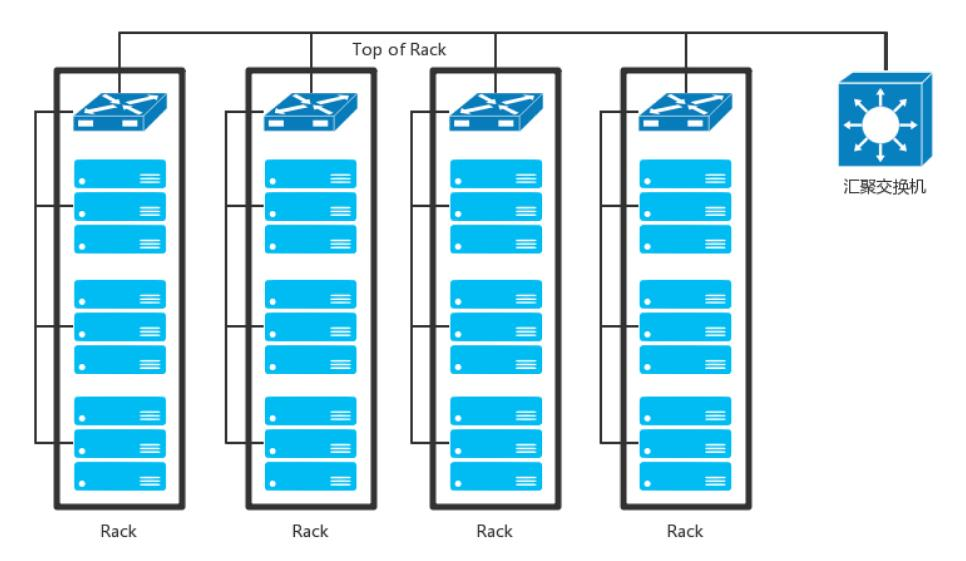
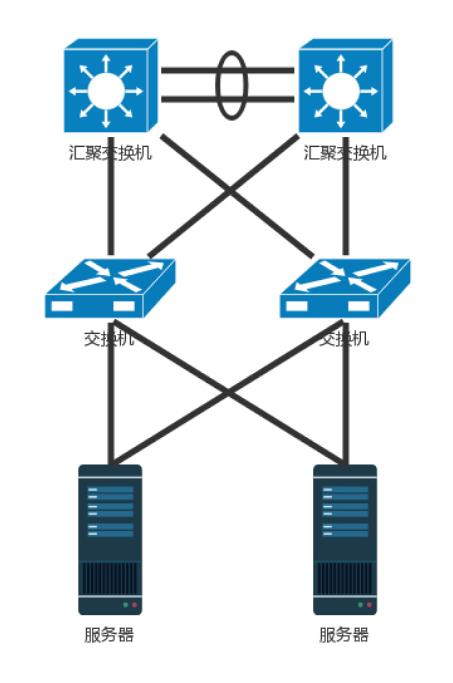

数据中心
数据中心：我是开发商，自己拿地盖别墅
数据中心用到了前面学过的所有知识，数据中心里面是一堆服务器。服务器被放在一个个叫作机架（Rack）的架子上面，出入口也是漏油器，在数
据中心的边界，所以叫做边界路由器，为了高可用，边界路由器有多个，而且会连接多个运营商网络，防止一个运营商网络出问题。
交换机往往是放在机架顶端的，所以经常称为 TOR（Top Of Rack）交换机。这一层的交换机常常称为接入层（Access Layer）。

当一个机架放不下的时候，就需要多个机架，还需要有交换机将多个机架连接在一起。这些交换机对性能的要求更高，带宽也更大。这些交
换机称为汇聚层交换机（AggregationLayer）。
数据中心里面的每一个连接都是需要考虑高可用的。这里首先要考虑的是，如果一台机器只有一个网卡，上面连着一个网线，接入到 TOR 交换机上。
如果网卡坏了，或者不小心网线掉了，机器就上不去了。所以，需要至少两个网卡、两个网线插到 TOR 交换机上，但是两个网卡要工作得像一张网卡一样，
这就是常说的网卡绑定（bond）。
这就需要服务器和交换机都支持一种协议 LACP（Link Aggregation Control Protocol）。它们互相通信，将多个网卡聚合称为一个网卡，多个
网线聚合成一个网线，在网线之间可以进行负载均衡，也可以为了高可用作准备。
TOR 交换机也需要高可用，同理接入层和汇聚层的连接也需要高可用性，也不能单线连着。
最传统的方法是，部署两个接入交换机、两个汇聚交换机。服务器和两个接入交换机都连接，接入交换机和两个汇聚都连接，当然这样会形成环，所
以需要启用 STP 协议，去除环，但是这样两个汇聚就只能一主一备了。

交换机有一种技术叫作堆叠，所以另一种方法是，将多个交换机形成一个逻辑的交换机，服务器通过多根线分配连到多个接入层交换机上，而接入层交
换机多根线分别连接到多个交换机上，并且通过堆叠的私有协议，形成双活的连接方式。

汇聚层将大量的计算节点相互连接在一起，形成一个集群。在这个集群里面，服务器之间通过二层互通，这个区域常称为
一个 POD（Point Of Delivery），有时候也称为一个可用区（Available Zone）。
当节点数目再多的时候，一个可用区放不下，需要将多个可用区连在一起，连接多个可用区的交换机称为核心交换机。
核心交换机吞吐量更大，高可用要求更高，肯定需要堆叠，但是往往仅仅堆叠，不足以满足吞吐量，因而还是需要部署多组核心交换机。核心和汇聚
交换机之间为了高可用，也是全互连模式的。
这个时候还存在那个问题，出现环路怎么办？两种方式是：
- 不同的可用区在不同的二层网络，需要分配不同的网段。汇聚和核心之间通过三层网络互通的，二层都不在一个广播域里面，不会存在二层环路的问题。
三层有环是没有问题的，只要通过路由协议选择最佳的路径就可以了。
随着数据中心里面的机器越来越多，尤其是有了云计算、大数据，集群规模非常大，而且都要求在一个二层网络里面。这就需要二层互连从汇聚层上
升为核心层，也即在核心以下，全部是二层互连，全部在一个广播域里面，这就是常说的大二层。
由于堆叠只解决一个核心交换机组内的无环问题，而组之间全互连，还需要其他机制进行解决。
大二层就引入了 TRILL（Transparent Interconnection of Lots of Link），即多链接透明互联协议。它的基本思想是，二层环
有问题，三层环没有问题，那就把三层的路由能力模拟在二层实现。
运行 TRILL 协议的交换机称为 RBridge，是具有路由转发特性的网桥设备，只不过这个路由是根据 MAC 地址来的，不是根据 IP 来的。
Rbridage 之间通过链路状态协议运作。通过它可以学习整个大二层的拓扑，知道访问哪个 MAC 应该从哪个网桥走；还可以计算最短的路径，也可
以通过等价的路由进行负载均衡和高可用性。
TRILL 协议在原来的 MAC 头外面加上自己的头，以及外层的 MAC 头。TRILL 头里面的 Ingress RBridge，有点像 IP 头里面的源 IP 地址，
Egress RBridge 是目标 I P地址，这两个地址是端到端的，在中间路由的时候，不会发生改变。而外层的 MAC，可以有下一跳的 Bridge，就像路
由的下一跳，也是通过 MAC 地址来呈现的一样。
如图中所示的过程，有一个包要从主机 A 发送到主机 B，中间要经过 RBridge 1、RBridge 2、RBridge X等等，直到 RBridge 3。在 RBridge 2
收到的包里面，分内外两层，内层就是传统的主机 A 和主机 B 的 MAC 地址以及内层的 VLAN。在外层首先加上一个 TRILL 头，里面描述这个
包从 RBridge 1 进来的，要从 RBridge 3 出去，并且像三层的 IP 地址一样有跳数。
然后再外面，目的 MAC 是 RBridge 2，源 MAC 是 RBridge 1，以及外层的 VLAN。当 RBridge 2 收到这个包之后，首先看 MAC 是否是自己的 MAC，
如果是，要看自己是不是 Egress RBridge，也即是不是最后一跳；如果不是，查看跳数是不是大于 0，然后通过类似路由查找的方式找到下一
跳 RBridge X，然后将包发出去。RBridge 2 发出去的包，内层的信息是不变的，外层的 TRILL 头里面。同样，描述这个包从 RBridge 1 进来的，
要从 RBridge 3 出去，但是跳数要减 1。外层的目标 MAC 变成 RBridge X，源 MAC 变成 RBridge 2。如此一直转发，直到 RBridge 3，将外
层解出来，发送内层的包给主机B。
在核心交换上面，往往会挂一些安全设备，例如入侵检测、DDoS 防护等等。
数据中心的网络是一个典型的三层网络结构。这里的三层不是指 IP 层，而是指接入层、汇聚层、核心层三层。这种模式非常有利于外部
流量请求到内部应用。这个类型的流量，是从外到内或者从内到外，对应到上面那张图里，就是从上到下，从下到上，上北下南，所以称为南北流量。
随着云计算和大数据的发展，节点之间的交互越来越多，例如大数据计算经常要在不同的节点将数据拷贝来拷贝去，这样需要经过交换机，使得数据从
左到右，从右到左，左西右东，所以称为东西流量。
为了解决东西流量的问题，演进出了叶脊网络（Spine/Leaf）。
- 叶子交换机（leaf），直接连接物理服务器。L2/L3 网络的分界点在叶子交换机上，叶子交换机之上是三层网络。
- 脊交换机（spine switch），相当于核心交换机。叶脊之间通过 ECMP 动态选择多条路径。脊交换机现在只是为叶子交换机提供一
个弹性的 L3 路由网络。南北流量可以不用直接从脊交换机发出，而是通过与 leaf 交换机并行的交换机，再接到边界路由器出去。
叶脊网络架构是扁平的结构，更易于水平扩展。